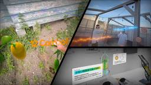
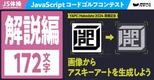
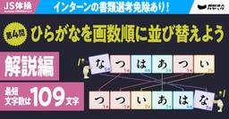
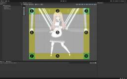
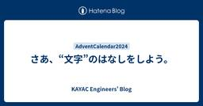
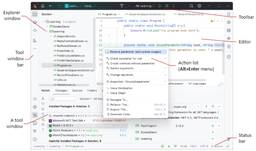

KAYAC Engineers' Blog
https://techblog.kayac.com/
カヤックのエンジニアがサービスの開発や運用などで培ってきた技術などの情報をまとめたブログです。WebやiOS、Androidの技術情報だけではなく、最新のデバイス、VR、Unity、インフラストラクチャなどのさまざまな最新技術についても毎週紹介していきます！
フィード

Meta Quest 3で色んなMR作ってみた！マルチプレイからストアリリース、仕事での活用まで
KAYAC Engineers' Blog
この記事はTech KAYAC Advent Calendar 2024の20日目の記事です。 面白プロデュース事業部 技術部の藤澤です。 この記事は、2024年実施してきたMRに関する3つの取り組みのご紹介と、それに関連するちょっとしたTipsをお話しする内容となっております。 マルチプレイMRコンテンツの開発 作るまでの背景 どんなものを作ったか Tips 同じ空間にモノを出す HMD間のマッチング、データ通信 マッチング データ通信 MRコンテンツのストアリリース リリースしたコンテンツのご紹介 Tips 伸縮する野菜 3Dモデル Unity クライアントワーク事業での活用 模型AR概要…
2分前

【JS体操】第5問「画像からアスキーアートを生成しよう」解説 1
1
KAYAC Engineers' Blog
YAPC::Hakodate 2024 の開催に合わせて出題した『JS体操』第5問「画像からアスキーアートを生成しよう」の解説記事です。
6時間前

【JS体操】第4問「ひらがなを画数順に並び替えよう」解説（最短文字数は109文字！） 1
KAYAC Engineers' Blog
『JS体操』第4問「ひらがなを画数順に並び替えよう」の解説記事。なんと最短文字数は109文字！挑戦してくださったみなさまの回答や社内QAチームが事前に検証・想定していた回答も含め一挙にご紹介します。
6時間前

【Unity】BaseMeshEffectを継承したクラスを使った角丸表示 1
KAYAC Engineers' Blog
このエントリは【カヤック】面白法人グループ Advent Calendar 2024の19日目の記事です。 はじめに 環境 準備 実装 BaseMeshEffectを継承 真ん中を表示 上下左右に四角表示を追加 角丸表示を追加 完成 まとめ はじめに こんにちは、カヤックアキバスタジオでエンジニアをやっている臼井です。 今年も残りわずかですね、みなさんいかがお過ごしでしょうか？ さて、今回はuGUIのImage、RawImageの角丸表示をやってみた内容を紹介していこうと思います。 環境 MacBook Pro 14インチ(macOS Sonoma 14.1) Unity2022.3.52f1…
15時間前

【WebGPU】Compute Shader で Curl Noise を計算してパーティクルを動かす 3
KAYAC Engineers' Blog
🎄この記事は【カヤック】面白法人グループ Advent Calendar 2024の18日目の記事です 🎄 こんにちは！ハイパーカジュアルゲームチーム・エンジニアの深澤です。 WebGPU の Compute Shader で Curl Noise を計算し、パーティクルの位置を更新してみました。 スクショは、MacBookPro M1で100万個のパーティクルを動かしたものです。 画像をクリックするとデモに飛びます。 WebGPU で実装しているため、Chromeのみの動作となります。 デモURL: https://takumifukasawa.github.io/webgpu-partic…
2日前

Mackerelのグラフアノテーションの効果的な使い方の例 12
KAYAC Engineers' Blog
この記事では、Tonamelの事例を通じて、Mackerelのグラフアノテーション機能を活用してサービスの負荷を可視化する方法を紹介しています。大会開催期間中の負荷ピークを一目で把握できるようになり、運用がより便利になりました。イベント型サービスを運営している方に参考になる内容です。詳細は記事をご覧ください！
2日前


Unity Editorから特定アセットのGitHubファイルリンクをブラウザで開きたい 3
KAYAC Engineers' Blog
Unity Editorから特定アセットのGitHubファイルリンクをブラウザで開くpackageをリリースしました。
4日前

新卒が進める新卒勉強会 3
KAYAC Engineers' Blog
技術部 フロントエンドエンジニアの村上です。 面白法人グループアドベントカレンダー2025 15日目の記事になります。 今回は、2024年4月にカヤックに入社したフロントエンドエンジニア5名に向けた勉強会を、新卒自身で進めるという取り組みについて書きたいと思います。 背景 入社して半年した頃、エンジニアが2人ずつ自由なテーマで発表する社内勉強会が始まりました。 新卒の自分にとっては知らない技術やテクニックを知る良い機会になっている一方で、ReactやNext.jsなど業務で馴染みのある技術については「基礎的な知識があればもっと発表内容を吸収できるのではないか」と思いました。 また自分の順番が回…
5日前

さあ、“文字”のはなしをしよう。 2
KAYAC Engineers' Blog
面白法人グループアドベントカレンダー2024の14日目の記事です。 フロントエンドエンジニアをしているけいとです。社内で文系エンジニアというあまり浸透しない二つ名を自称していますので、“文字”の話をざっくばらんにしてみようと思います。 “文字”コードのはなし エンジニアとして活動する上で文字といえばやはり文字コードですよね。 文字コードについて簡単に説明すると、文字をコンピュータ上で処理する際に識別するために文字それぞれの種類に対して番号を割り振った一覧表のことです。例えば、 “KAYAC” というテキストを打ち込んで友達に送信するのに、ASCIIと呼ばれる文字コードを利用するとします。その際…
6日前

【JetBrains Rider】「個人的振り返り」と「JetBrains Rider 推しポイント」 1
KAYAC Engineers' Blog
Tech KAYAC Advent Calendar 2024 の13日目の記事になります。 カヤックボンドでエンジニアをやっております志村と申します。 今回は今年度の個人的な振り返りとJetBrains Riderの個人的推しポイントについて記事にしてみました！ 〇 ボンド振り返り 〇 Jet Brains Rider ツール概要 開発体験 ライセンスが超絶扱いやすい 全体的に活発的 全体的に操作しやすい ◆ ユーザーインターフェース オススメ記事＆機能紹介 ① JetBrains .NET Meetup Tokyo 2019 ② 豊富なデバック機能 ③IDE上でのGit操作 ④ 強力な検索…
6日前

Laravel Filamentでお手軽に作る管理画面とそのためのテーブル設計
KAYAC Engineers' Blog
はじめに この記事は【カヤック】面白法人グループ Advent Calendar 2024の12日目の記事です。 こんにちは、カヤックボンド所属のサーバーサイドエンジニアの朝倉と申します。 本記事のテーマはLaravel filamentを用いた管理画面作成です。 管理画面を簡単に作れるFilamentの基本的な使い方と要件をちゃんと決めずに見切り発車したらぶつかってしまうFilamentならではの問題を書いていきたいと思います。 Laravel Filamentとは filamentphp.com まずPHPのフレームワークとしてLaravelがあり、その拡張パッケージがFilamentです…
8日前
最近のスマホでWeb Share APIが動かなくなってるらしい
KAYAC Engineers' Blog
カヤック 技術部でフロントエンジニア・プランナーをしてますゆうもやです。 面白法人グループアドベントカレンダー2024 11日目記事です。 皆様「Web Share API」をご存知でしょうか？Webページからアプリに直接画像やテキストをシェアできる非常に便利な機能です。 カヤックでは診断やジェネレーター系コンテンツを多く制作しているため、このAPIを頻繁に活用してきました。 www.kayac.com しかし、最近一部のスマホで期待通りに動作しないケースが増えているのをご存知でしょうか？ Web Share APIとは Web Share APIは、Webページから直接画像やテキストをシェア…
9日前
Pine Script でチャートに線を引く
KAYAC Engineers' Blog
こんにちは。技術部の小池です。 この記事は 面白法人グループ Advent Calendar 2024 の9日目の記事です。 世は貯蓄から投資への時代、投資を始めての株などのチャートを見る機会が増えた方もいるのではないでしょうか。 今回はチャート上で実行できる趣味のプログラミングの話をします。 TradingView 上で開発、実行できる Pine Script というプログラミング言語を使います。TradingView は、株、指数、FX、仮想通貨などの金融市場のチャート分析ができる人気のプラットフォームです。 Pine Script は11月に v6 がリリースされていますが、この記事では…
11日前
コードジェネレーター「Plop」を使ってコンポーネント開発を加速させる
KAYAC Engineers' Blog
面白法人グループアドベントカレンダー2024 8日目の記事です。 こんにちは！技術部 フロントエンドエンジニアの大脇です。 今回は、コードジェネレーターを活用してコンポーネント開発を効率化する方法をご紹介します。 手動でのファイル作成や設定の煩わしさから解放されたい方に読んでいただけると幸いです。 課題 私の担当するReactプロジェクトでは、コンポーネントごとに以下のようなディレクトリ構造を採用しています。 components/ └── Button/ ├── Button.tsx ├── Button.module.scss ├── Button.stories.tsx └── inde…
12日前
技術系の最新情報ってどこから得てますか？
KAYAC Engineers' Blog
面白法人グループ Advent Calendar 2024の6日目の記事です。カヤック社内のエンジニアが、どこから情報を得ているのか気になったのでアンケートしてみました。
14日前
TextMesh Proでテキストを円形に配置する
KAYAC Engineers' Blog
はじめに この記事は【カヤック】面白法人グループ Advent Calendar 2024の5日目の記事です。 こんにちは。中山と申します。 TextMesh Proでテキストを円形に配置できるようにする方法について紹介します。 こういうやつです。 実装はGitHub - quartorz/FlexibleTextMeshに置いてあります。 なお、アラビア文字やデーヴァナーガリーのように前後が繋がる文字がある場合はこの方法ではうまくいきません。 計算について どのような計算をするか モンゴル文字のように当てはまらないものもありますが、多くの文字は横方向に配置されます。なので、横長の四角形の領域…
14日前
dbtでRedshiftのCOPY JOB (S3 auto copy) を管理したい。
KAYAC Engineers' Blog
この記事はdbt Advent Calendar 2024および、Kayac Group Advent Calender 2024の4日目の記事になります。 こんにちは、その他事業部SREチーム所属の@mashiikeです。 背景 2024/10/30にAWS からAmazon Redshiftの素晴らしいUpdateが発表されました。 aws.amazon.com 自動コピーを使用して Amazon S3 から Amazon Redshift へのデータ取り込みです。 Redshift では、COPY コマンドを使用してデータを Amazon S3 から 効率的にデータをロードできますが、 …
16日前
首相官邸を掘ってみよう
KAYAC Engineers' Blog
こんにちは、カヤック技術部の竹田です。 【カヤック】面白法人グループ Advent Calendar 2024 3日目の記事になります。 本稿は首相官邸ホームページのドメイン:kantei.go.jpの調査記事になります。 首相官邸のホームページ 首相官邸をdigる ドメイン情報を調べる方法は幾つかありますが、digを使って調べます、「digる」＝「掘る」という言い回しもあるコマンドです。 ホームページhttps://www.kantei.go.jpはhttps://kantei.go.jpからリダイレクトされているので、各ドメイン情報を調べてみましょう。 $ dig www.kantei.g…
17日前
レガシーサーバーをコンテナで再構築した、その5年後の移行と解体
KAYAC Engineers' Blog
面白法人グループアドベントカレンダー2024 2日目の記事です。SREの藤原です。 2024年も暮れようとしていますね。ところで今から5年前のこと、builderscon tokyo 2019 というイベントで「レガシーサーバーを現代の技術で再構築する」というタイトルで発表しました。 speakerdeck.com この発表は、当時 Amazon EC2 のシングル構成で動作していたサーバー(SVN, Redmineほか、社内の開発支援ためのサービスが動作していました)を、Amazon ECS をはじめとしたコンテナや AWS のマネージドサービスを用いてリプレイスした、という内容です。 20…
17日前
【Go】OpenTelemetry SDK で Cloud Trace にスパン属性として配列を送る
KAYAC Engineers' Blog
今年も師走ということでアドベントカレンダー2024が始まりました。カヤックSREの市川です。 初回は、Google Cloud における分散トレースの話です。前半は関連知識のおさらいになるので、「オブザーバビリティだいたい分かるよ〜」という方は本題まで飛ばしてください。 ちなみに本記事の内容は、SDK で直接送信する前提です。Collector を立てている場合についても最後で少し触れますが、記事が役立つユースケースとしては App Engine Standard 環境を利用している場合が多いのかなと思います。 分散トレースのおさらい 免責：以下、おさらいの内容はある程度ラフな説明になりますの…
18日前
【カヤック】面白法人グループ Advent Calendar 2024 が始まります！
KAYAC Engineers' Blog
こんにちは！カヤックの市川です。早くも年の瀬が近づいてきましたね。 12月と言えば......そうです！毎年恒例の「技術部ブログ Advent Calendar」を今年も開催します！ 最近もりもり増えているグループ会社も参加するようになって、早くも3回目です。 例年どおり、毎日こちらの はてなブログ に投稿していくので、バラエティ豊富な記事に是非ご期待ください！ 以下の Qiita カレンダーにも、公開次第逐一リンクを登録する形になる予定です！ qiita.com 去年のブックマーク上位3記事 おまけとして、去年の反響が大きかった記事をいくつか紹介いたします。一覧はこちら。 3位「Rails+…
20日前
オペレーション再現性を高めるための作業用ホスト使い捨て戦略
KAYAC Engineers' Blog
SREチームの長田です。 今回はAWSのVPC(Virtual Private Network)内で作業する時の話です。 VPC内で作業したい VPC内で作業したいこと、ありますよね。 環境構築中の動作確認とか、不具合・障害調査のための定形外作業とか、メンテナンスためのイレギュラーな作業とか。 定常的に行うほどではないですが、AWSでVPCに絡んだサービスを使用しているなら、VPC内での作業は少なからずあると思います。 VPC内に閉じたリソースにアクセスする場合は、当然ですがVPC内からアクセスする必要があります。 VPC外からアクセスするための経路を用意すればそれも可能ですが、アプリケーショ…
21日前
コンテナイメージのタグをよしなに探すツールを作りました
KAYAC Engineers' Blog
SRE チームの市川恭佑です。 今回はコンテナに関連するDevOpsツールを作った話です。ecresolve と書いて「イーシーリゾルブ」と読みます*1。 github.com ecresolve は、ざっくり言うとコンテナイメージのタグが上書きされる前提で、複数タグを指定すると一番先頭で見つかったものを出力するツールです。 基本的な使い方としては、たとえば dog と cat のタグのみが存在する ECR リポジトリ animal があるとき、以下のコマンドを実行すると標準出力に dog が出力されます*2。 ecresolve monkey bird dog human cat --rep…
1ヶ月前
【Go】kong で CLI のトップレベルに --version フラグを実装する
KAYAC Engineers' Blog
お久しぶりです。SRE の市川恭佑です。 今回は Go で CLI ツールを作成する際の小ネタを紹介します。 そもそも CLI パーサの選定 Go でコマンドを解析する手法は多岐に渡ります。そもそも標準 flag パッケージだけで実装することも可能ですし、spf13/cobra や urfave/cli をフラグパーサに採用することも多いかと思います。 好きなものを使っていただくのが一番ですが、今回の話題で取り上げる alecthomas/kong は、サブコマンドのサポートのみならず簡単な制約チェックも提供されているのが魅力的です。個人的には、不正なフラグが与えられたときに適切なエラーメッセ…
2ヶ月前
AWSアカウントを取り違えないための試み
KAYAC Engineers' Blog
AWSアカウントを取り違えたことはないでしょうか？場合によっては重大な事故にも繋がりかねない取り違えを防ぐために実践している、「気をつける」以外の対策について紹介します。
2ヶ月前
Perlbatross in YAPC::Hakodate 2024の結果発表と解説 #yapcjapan
KAYAC Engineers' Blog
こんにちは！ 技術部の谷脇です。 去る10/5にYAPC::Hakodate 2024が開催されました。いかがでしたか？ yapcjapan.org 以前に告知したように今回のYAPCもコードゴルフコンテストPerlbatrossを開催しました。 techblog.kayac.com このエントリでは結果発表と、事前解答チームの川添(@acidlemon)より社内最短解の紹介と解説をお届けします。 Perlbatrossは現在コードの投稿や検証はできるものの、ランキングに載らないモードになっております。あと1週間程度はこのようにしておきますので、やりそびれた方や、ちょっと試してみたいなという方…
2ヶ月前
YAPC::Hakodateでもやります！コードゴルフ企画Perlbatross 前回行われたチートも解説するよ #yapcjapan
KAYAC Engineers' Blog
こんにちは！！！ お元気ですか？？？？？？ カヤック技術部の谷脇です。 来たる10/5にYAPC::Hakodate 2024が開催されます！ わーい！！ yapcjapan.org 我々カヤックもYAPC::Hakodate 2024にスポンサーしております。弊社からも何人か登壇します。実は私もします！ techblog.kayac.com そして、前回のYAPCでは椅子スポンサーとしてPerlbatrossという企画しておりました。Perlbatrossとは、お題に対してPerlでいかに短くコードを書くか競うコンテストです。つまりコードゴルフです。 前回は気合を入れておりまして、このために…
3ヶ月前
YAPC::Hakodate 2024 にカヤックのメンバーが登壇します！
KAYAC Engineers' Blog
カヤックのメンバーが2名、YAPC::Hakodateに登壇します。コードゴルフイベントPerlbatrossとJS体操も同時開催予定！
3ヶ月前